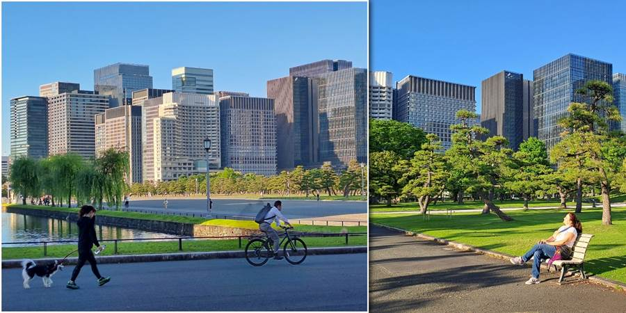
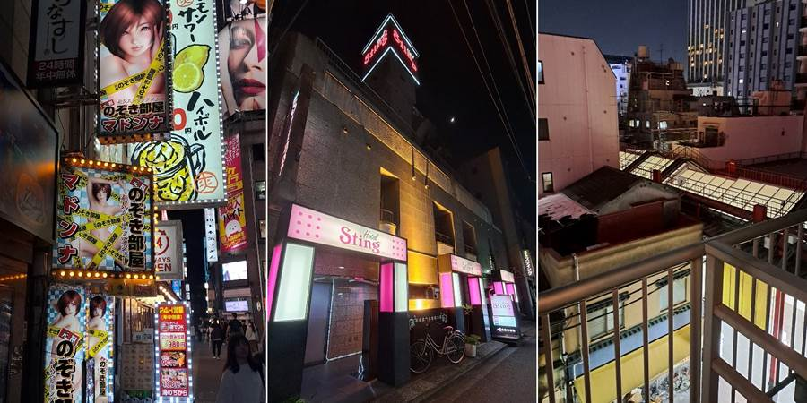

Dan dvanaesti: Carska palata i Tokio Tower
Za to vreme ja sam otišla do Kraljeve palate i bašte.
Nismo ih ranije stavili u cilj za obilazak jer nisu preterano impresivne. Palata je skromna kao i sami Japanci. Lep park i okolo neboderi. Poslovna oblast.
Kad odjednom čujem neko se dere. Na ulicama im ne možeš maltene ni glas čuti, a ne da neko viče. Ovaj se bukvalno dere kao da mu kožu deru. I to ponavlja isto. Nekad brzo, brzo, nekada sporije.
Ugledam ga, uniformisan u stavu mirno. Ljudi u odelima, svi tamnim, skoro istim, izlaze. Pitam čoveka pored, šta se dešava. Kaže idu ljudi sa posla, a on svakog ponaosob pozdravlja sa “Srećno”.
Derući se. Ako ih je više, brzo viče da ih sve pozdravi, ako je poneko prošao, normalno sporo vikne. Poslovne žene da izlaze nisam videla. Niti sam ih videla u vozu. Možda ne idu tako u gomilama. Ili nisu sve tako karakteristična, isto obučene.
Otišla sam do Tokio Tower, crvenog Ajfela koji je 3 metra viši od onog u Parizu. Našla spot sa Instagrama gde da se slikam. Kad ono red. Njih dvadesetak ispred mene.
Reko ok, brzo će to. Ono ma kakvi. Jedni ostanu 10, 15 minuta. Bila tu oko 20 minuta, čisto da mi prođe vreme, ćaskala sa ljudima u redu. Bilo je prijatno. Al šanse nikakve da se stigne. Cure iza mene se slikaju tu dok čekaju. Slikale i mene. Pita je li dobro. Odlično.
Ono nit Ajfel ima vrh, niti ja stopala. Tako da imam jednu, takvu sliku.
Lagano nazad. Taman i deca završila i sreli smo se baš pred lokerima. Neverovatno. Reko ajmo metroom. Metroom, začudiše se. Razmazila sam ih da kraće, jeftinije relacije idu taksijem.
Na nas četvoro je ok. Dobro umorni smo, taksi. Već ih zaustavljamo na ulici ko pravi.
Ulaz u hotel je šljašteće pink. Ušli, a ono smrdi na cigare. Ušli u sobe. I one smrde na cigare. Luftiraj. Kao da je ovo jedino mesto u Tokiju gde sme da se puši pa su svi turisti pušači došli tu i sve zadimili. Cigare smo videli samo na jednom mestu da prodaju. Na jednoj vending mašini.
Kockanje je zabranjeno u Japanu pa nema kladionica kao kod nas na svakom ćošku.
A ni hleb videla nisam. Malu kiflu, sendvič da, kao i čuvene omiljene trouglaste 7 Eleven sendviče bez korice, pa i sa voćem i kremom, ali hleb ne. Voleli smo i pohovanu piletinu iz Family Mart. Kao i sva gotova jela iz 7 Eleven. Jednom smo samo kuvali i to onu čuvenu govedinu. Nudle ne računam kao kuvanje.
Uveče Petar otišao u sobu kod Kristine i Luke. Gledali animu. Naručili picu. Uživancija.
Gledam ove WC šolje. Na stanici čim sam sela samo krenulo da šušti da neutrališe zvuke. Mislim da im je sledeći stepen neutralizacija mirisa.
Doživela sam i da mladić pored mene u vozu kulturno šmrkuće i uvlači sline ali nikako da ih nekulturno izduva. To pravilo nikako ne razumem da je nekulturno izduvati nos a da je kulturno uvlačiti sline i šmrckati.
Posebno mi se svidelo u Japanu što nigde niko neće da te prevari, navuče. Ako zaboraviš kusur na mašini, ne pitajte kako znam, jer na kasi stavljaš pare u automat i automatski dobijaš kusur, oni će te podsetiti da uzmeš. Niko te ne gleda kao pokretni novčanik i ne gleda kako da ti izvuče novac. Napojnice je nepristojno ostavljati. Maksimalno je bezbedno.
Tako da je bilo baš lepo u Japanu.
Jedino gejšu videli nismo.
Doživela da sedim na klupi u Tokiu, verovali ili ne, u parku kod Imperial Garden.
 
Ne propustite sledeću avanturu!
Kad Sandra krene u novi kraj sveta, vaš inbox prvi sazna. Prijavite se i stižu vam sve nove priče mejlom.